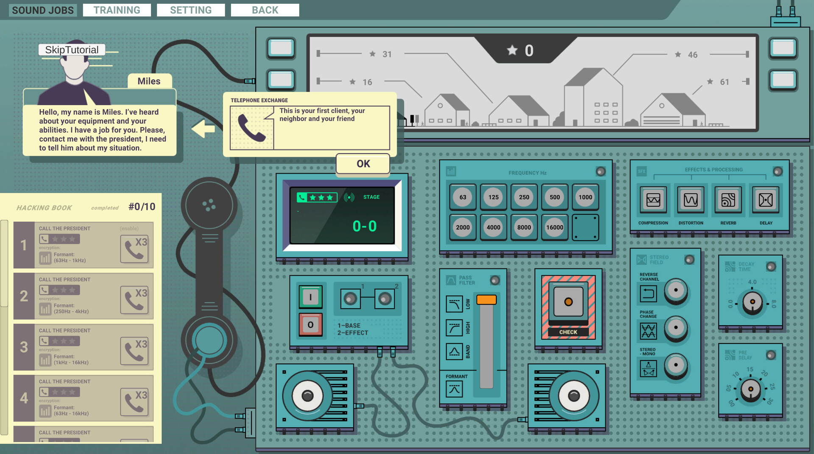

Background and SOTA
This project is based on the Adaptive Systems course on MED7 in AAU.
Critical listening
Several papers and projects concerning the field of Critical Listening Skills (CLS) were taken into account for this project. Critical listening is the active process of analyzing and judging audio content rather than just passively hearing stimuli. CLS is a complex field where relevant literature such as A Review of Literature in Critical Listening Education by Stephane Elmosnino describe a number of different factors including overall aural attention, switching between levels of detail, and discriminating among simultaneous sounds all contributing to this complexity. [Elmosnino, 2022], meaning CLS can require a great deal of practice.Jason Corey methodology
SOTA
One of the projects that seemed relevant to ours was the Sound Jobs game developed by Paulina Bielesz and Krzysztof Gawlas from the University of Silesia. Below in Figure 1 is included a screenshot of the game.
Gamification
It was decided to do a gamified approachReferences
Stephane Elmosnino. 2022 A Review of Literature in Critical Listening Education. Journal of the Audio Engineering Society 70 (05 2022), 328–339. doi:10.17743/jaes.2022.0004Paulina Bielesz and Krzysztof Gawlas. 2026 Educational computer game supporting skills development in timbre solfege. INTL JOURNAL OF ELECTRONICS AND TELECOMMUNICATIONS (01 2026), 1–5. doi:10.24425/ijet.2026.157863
Back to main page
Click here to return to the index page.
Index page →About
This describes the background and SOTA of the project.